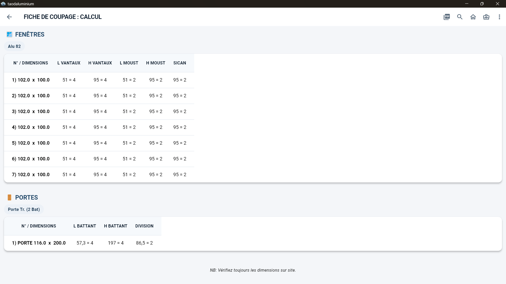
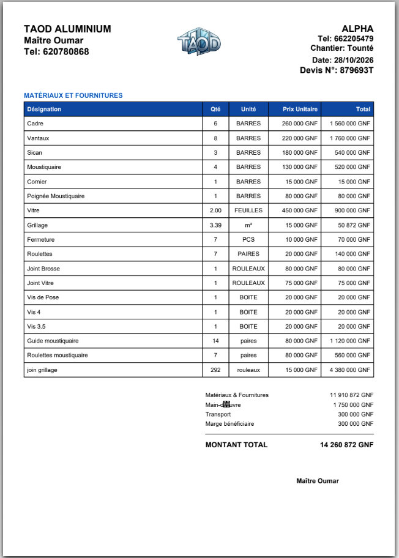
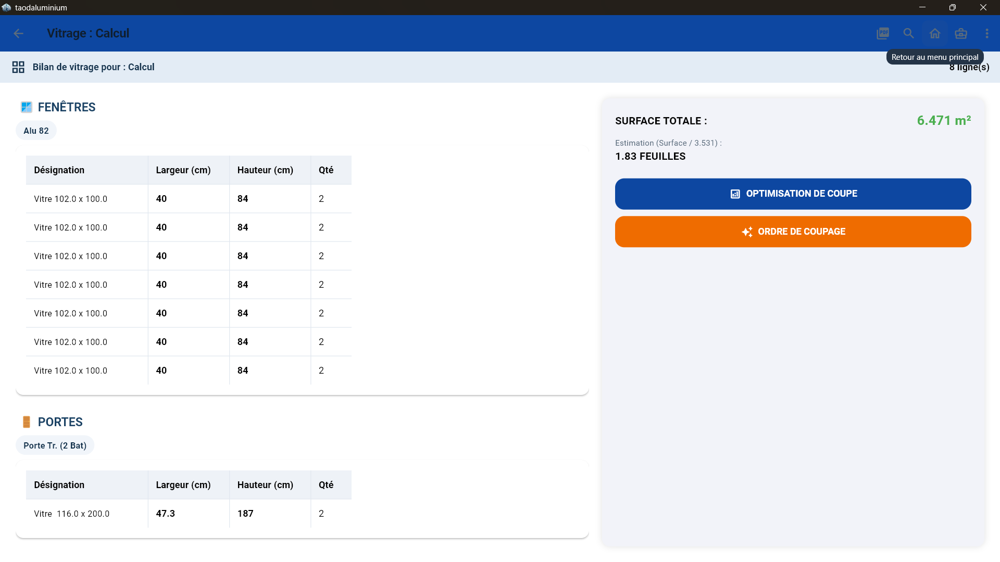
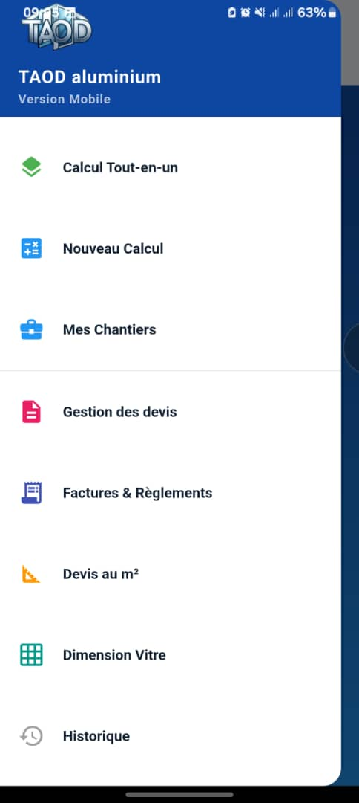
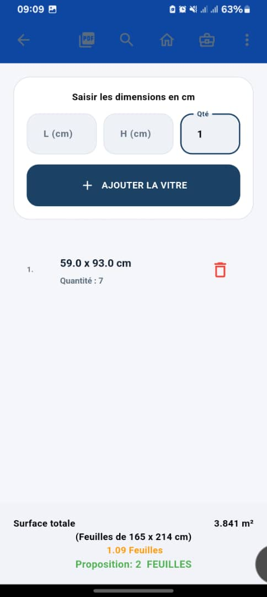
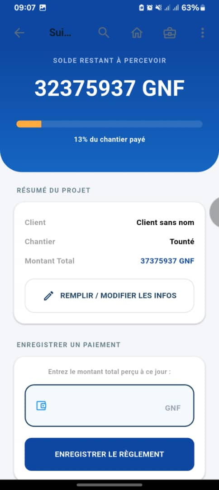

DANS L'APPLICATION
Voyez votre atelier
avant de le télécharger.
Une interface claire sur Windows et Android pour calculer, organiser vos chantiers et préparer vos documents.

Calcul de coupeFenêtres, portes et profilés aluminium

Devis professionnelsMatériaux et montants présentés clairement

Gestion du vitrageMesures, surfaces et optimisation de la matière
VERSION ANDROID
Votre atelier,
toujours avec vous.
Retrouvez les outils essentiels de TaodAluminium sur votre téléphone, sur le chantier comme à l'atelier.
↓ Télécharger l'APK Android ↗

